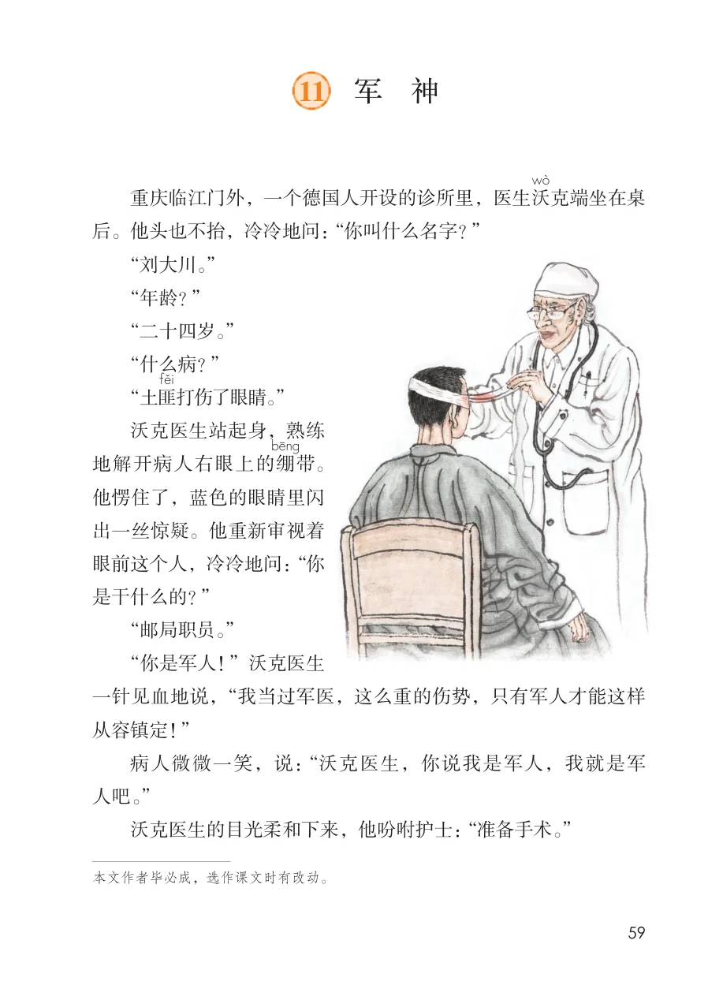
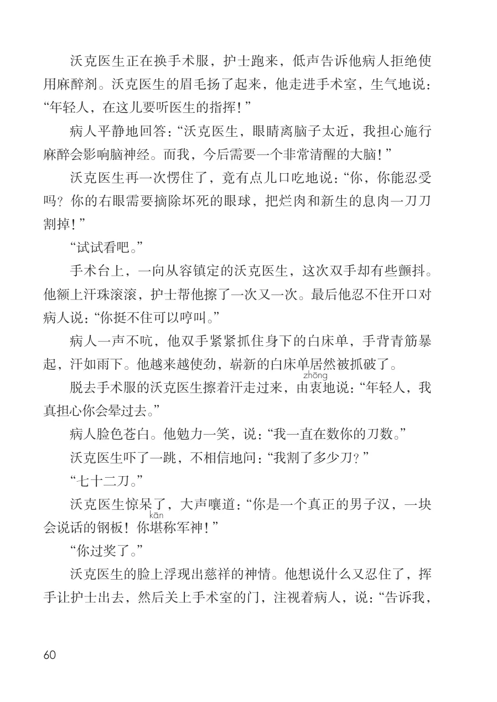
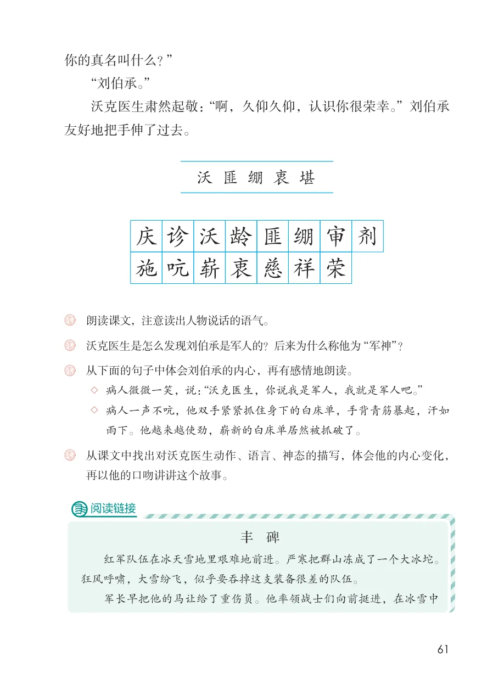
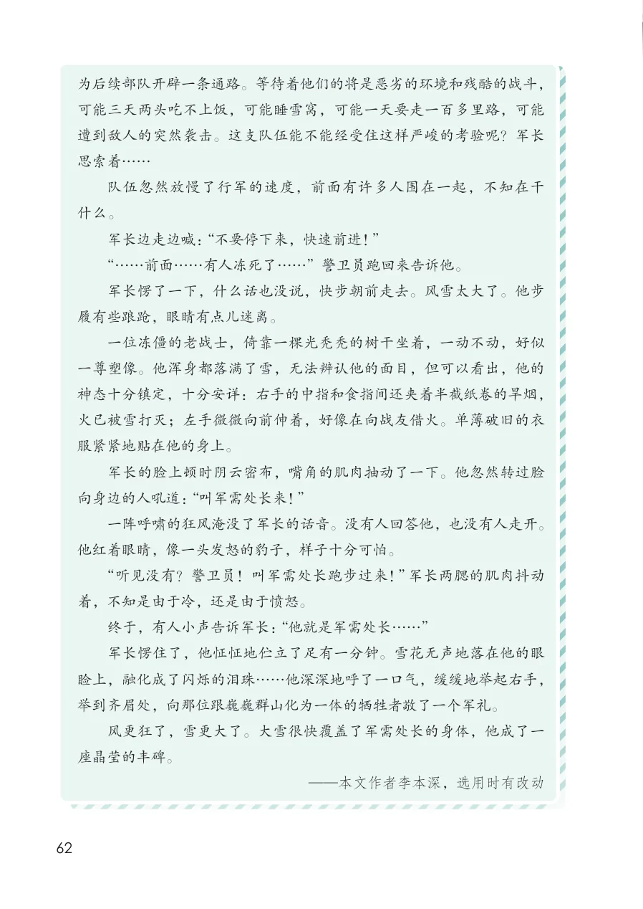

展开章节菜单
11 军 神
重庆临江门外，一个德国人开设的诊所里，医生沃
克端坐在桌
后。他头也不抬，冷冷地问：“你叫什么名字？”
“刘大川。”
“年龄？”
“二十四岁。”
“什么病？”
“土匪
打伤了眼睛。”
沃克医生站起身，熟练
带。
他愣住了，蓝色的眼睛里闪
出一丝惊疑。他重新审视着
眼前这个人，冷冷地问：“你
是干什么的？”
“邮局职员。”
“你是军人！”沃克医生
一针见血地说，“我当过军医，这么重的伤势，只有军人才能这样
从容镇定！”
病人微微一笑，说：“沃克医生，你说我是军人，我就是军
人吧。”
沃克医生的目光柔和下来，他吩咐护士：“准备手术。”
查看教材原页（保留全部图片、注音与原始排版）

沃克医生正在换手术服，护士跑来，低声告诉他病人拒绝使用麻醉剂。沃克医生的眉毛扬了起来，他走进手术室，生气地说：
“年轻人，在这儿要听医生的指挥！”
病人平静地回答：“沃克医生，眼睛离脑子太近，我担心施行麻醉会影响脑神经。而我，今后需要一个非常清醒的大脑！”
沃克医生再一次愣住了，竟有点儿口吃地说：“你，你能忍受吗？你的右眼需要摘除坏死的眼球，把烂肉和新生的息肉一刀刀割掉！”
“试试看吧。”
手术台上，一向从容镇定的沃克医生，这次双手却有些颤抖。他额上汗珠滚滚，护士帮他擦了一次又一次。最后他忍不住开口对病人说：“你挺不住可以哼叫。”
病人一声不吭，他双手紧紧抓住身下的白床单，手背青筋暴起，汗如雨下。他越来越使劲，崭新的白床单居然被抓破了。
脱去手术服的沃克医生擦着汗走过来，由衷
地说：“年轻人，我真担心你会晕过去。”
病人脸色苍白。他勉力一笑，说：“我一直在数你的刀数。”
沃克医生吓了一跳，不相信地问：“我割了多少刀？”
“七十二刀。”
沃克医生惊呆了，大声嚷道：“你是一个真正的男子汉，一块
称军神！”会说话的钢板！你堪
“你过奖了。”
沃克医生的脸上浮现出慈祥的神情。他想说什么又忍住了，挥手让护士出去，然后关上手术室的门，注视着病人，说：“告诉我，
查看教材原页（保留全部图片、注音与原始排版）

你的真名叫什么？”
“刘伯承。”
沃克医生肃然起敬：“啊，久仰久仰，认识你很荣幸。”刘伯承
友好地把手伸了过去。
沃匪绷衷堪
沃诊龄匪庆剂施
绷审
沃克医生是怎么发现刘伯承是军人的？后来为什么称他为“军神”？
雨下。他越来越使劲，崭新的白床单居然被抓破了。
再以他的口吻讲讲这个故事。
红军队伍在冰天雪地里艰难地前进。严寒把群山冻成了一个大冰坨。
狂风呼啸，大雪纷飞，似乎要吞掉这支装备很差的队伍。
军长早把他的马让给了重伤员。他率领战士们向前挺进，在冰雪中
“沃克医生，你说我是军人，我就是军人吧。”
查看教材原页（保留全部图片、注音与原始排版）

为后续部队开辟一条通路。等待着他们的将是恶劣的环境和残酷的战斗，
可能三天两头吃不上饭，可能睡雪窝，可能一天要走一百多里路，可能
遭到敌人的突然袭击。这支队伍能不能经受住这样严峻的考验呢？军长
思索着……
队伍忽然放慢了行军的速度，前面有许多人围在一起，不知在干
什么。
军长边走边喊：“不要停下来，快速前进！”
“……前面……有人冻死了……”警卫员跑回来告诉他。
军长愣了一下，什么话也没说，快步朝前走去。风雪太大了。他步
履有些踉跄，眼睛有点儿迷离。
一位冻僵的老战士，倚靠一棵光秃秃的树干坐着，一动不动，好似
一尊塑像。他浑身都落满了雪，无法辨认他的面目，但可以看出，他的
神态十分镇定，十分安详：右手的中指和食指间还夹着半截纸卷的旱烟，
火已被雪打灭；左手微微向前伸着，好像在向战友借火。单薄破旧的衣
服紧紧地贴在他的身上。
军长的脸上顿时阴云密布，嘴角的肌肉抽动了一下。他忽然转过脸
向身边的人吼道：“叫军需处长来！”
一阵呼啸的狂风淹没了军长的话音。没有人回答他，也没有人走开。
他红着眼睛，像一头发怒的豹子，样子十分可怕。
“听见没有？警卫员！叫军需处长跑步过来！”军长两腮的肌肉抖动
着，不知是由于冷，还是由于愤怒。
终于，有人小声告诉军长：“他就是军需处长……”
军长愣住了，他怔怔地伫立了足有一分钟。雪花无声地落在他的眼
睑上，融化成了闪烁的泪珠……他深深地呼了一口气，缓缓地举起右手，
举到齐眉处，向那位跟巍巍群山化为一体的牺牲者敬了一个军礼。
风更狂了，雪更大了。大雪很快覆盖了军需处长的身体，他成了一
座晶莹的丰碑。
查看教材原页（保留全部图片、注音与原始排版）
